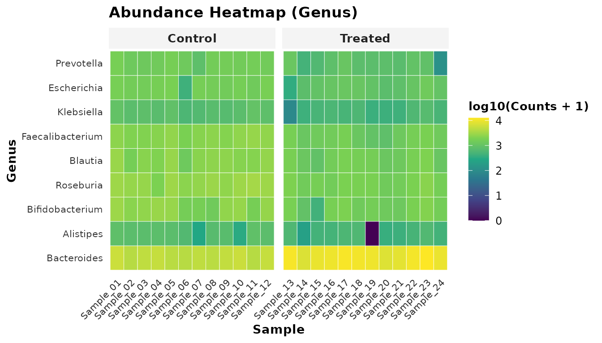

Bioconductor Interoperability: Integrating tidybiome with TreeSummarizedExperiment and mia
Tidybiome Authors
info@tidybiome.org2026-09-22
bioconductor_interoperability.RmdAbstract
The Bioconductor ecosystem has coalesced around
SummarizedExperiment and
TreeSummarizedExperiment (Huang et al., 2021) as
foundational data structures for multi-assay high-throughput genomics
and metagenomics. While TreeSummarizedExperiment (TreeSE)
and downstream analytical packages like mia provide
rigorous S4 containerization, exploring, wrangling, and visualizing
microbiome datasets often requires navigating multi-layered slot
accessors that conflict with tidy data principles.
tidybiome bridges the gap between Bioconductor S4 rigor
and tidyverse fluidity. It provides bidirectional, lossless
conversion between tidy_microbiome and
TreeSummarizedExperiment objects, enabling researchers to
seamlessly interchange between mia pipelines and
tidybiome’s modern compositional tools (Robust CLR, CAFT
zero-cell consensus differential abundance, distance-based redundancy
analysis, and microbial co-occurrence networks).
1. Introduction
Bioconductor is the gold standard for reproducible computational
biology. In microbiome research: -
TreeSummarizedExperiment extends
SingleCellExperiment / SummarizedExperiment to
store assay matrices alongside row/column hierarchical phylogenetic
trees (rowTree, colTree). -
mia (Microbiome Analysis) provides an
extensive collection of functions operating natively on
TreeSummarizedExperiment containers.
However, many exploratory analyses, data cleaning steps, and
publication visualizations benefit from tidy data representations where
samples behave as tibble observations and dplyr verbs
operate intuitively.
tidybiome was built to complement, rather than compete
with, the Bioconductor ecosystem.
┌────────────────────────────────────────┐ ┌────────────────────────────────────────┐
│ TreeSummarizedExperiment (S4) │ │ tidy_microbiome (S3) │
│ │ to_tidy │ │
│ • assays: counts, relabundance │ ──────────> │ • Inherits from tbl_df (sample meta) │
│ • colData: sample covariates │ │ • S3 bracket subsetting: tb[i, j] │
│ • rowData: taxonomic annotations │ <────────── │ • attr(tb, "assays"): matrices │
│ • rowTree: phylogenetic ape::phylo │ to_tse │ • attr(tb, "tax_table"): tibble │
│ │ │ • attr(tb, "phy_tree"): ape::phylo │
└────────────────────────────────────────┘ └────────────────────────────────────────┘2. Installation & Loading
To install tidybiome along with core Bioconductor
dependencies:
if (!requireNamespace("BiocManager", quietly = TRUE))
install.packages("BiocManager")
# Bioconductor foundation packages
BiocManager::install(c("SummarizedExperiment", "TreeSummarizedExperiment", "mia"))
# Install tidybiome
devtools::install_github("mladen5000/tidybiome")
library(tidybiome)
library(dplyr)
library(ggplot2)
data("gut_microbiome", package = "tidybiome")
gut_microbiome
#> ── tidy_microbiome [24 samples × 40 taxa] ────────────
#> • Assays: counts
#> • Taxonomy ranks: Kingdom > Phylum > Genus
#> • Tree: None
#> ── Sample Metadata ───────────────────────────────────
#> # A tibble: 24 × 5
#> sample_id treatment diet age depth
#> <chr> <fct> <fct> <dbl> <dbl>
#> 1 Sample_01 Control Standard 54 22212
#> 2 Sample_02 Control HighFiber 34 17287
#> 3 Sample_03 Control Standard 44 18716
#> 4 Sample_04 Control HighFiber 46 18906
#> 5 Sample_05 Control Standard 44 20561
#> 6 Sample_06 Control HighFiber 39 14289
#> 7 Sample_07 Control Standard 55 17019
#> 8 Sample_08 Control HighFiber 39 18048
#> 9 Sample_09 Control Standard 60 19046
#> 10 Sample_10 Control HighFiber 39 20230
#> # ℹ 14 more rows3. Two-Way Conversion: TreeSummarizedExperiment &
tidybiome
3.1 Exporting to TreeSummarizedExperiment
(to_tse)
When collaborating with researchers whose workflows rely on
Bioconductor packages (mia, scater,
bluster), you can convert any tidy_microbiome
object directly into a TreeSummarizedExperiment:
# Convert to TreeSummarizedExperiment
tse <- to_tse(gut_microbiome)
tse
#> class: TreeSummarizedExperiment
#> dim: 40 24
#> metadata(0):
#> assays(1): counts
#> rownames(40): ASV01 ASV02 ... ASV39 ASV40
#> rowData names(3): Kingdom Phylum Genus
#> colnames(24): Sample_01 Sample_02 ... Sample_23 Sample_24
#> colData names(4): treatment diet age depth
#> reducedDimNames(0):
#> mainExpName: NULL
#> altExpNames(0):
#> rowLinks: NULL
#> rowTree: NULL
#> colLinks: NULL
#> colTree: NULLAll metadata columns are placed into colData(tse),
taxonomy ranks into rowData(tse), and all registered
count/transformed assays into assays(tse).
3.2 Importing from TreeSummarizedExperiment
(as_tidybiome)
Conversely, when receiving a TreeSummarizedExperiment or
SummarizedExperiment object from a Bioconductor pipeline or
public repository (e.g. curatedMetagenomicData), convert it
into tidy_microbiome with a single command:
# Convert TreeSE or SummarizedExperiment back to tidy_microbiome
tb_restored <- as_tidybiome(tse)
tb_restoredThe resulting tb_restored is immediately ready for
native dplyr filtering, compositional modeling, and
publication visualizations.
4. A Hybrid Bioconductor Workflow
Combining Bioconductor’s mia container storage with
tidybiome’s statistical tools provides the best of both
worlds:
4.1 Step 1: Quality Control and Normalization with
tidybiome
Filter low-depth samples with dplyr::filter and apply
zero-safe Robust CLR without pseudocount distortion:
# Tidy filtering and modern rCLR transformation
gut_clean <- gut_microbiome |>
filter(depth > 12000) |>
transform_abundance(method = "rclr") |>
transform_abundance(method = "gmpr")
gut_clean
#> ── tidy_microbiome [24 samples × 40 taxa] ────────────
#> • Assays: counts, rclr, gmpr
#> • Taxonomy ranks: Kingdom > Phylum > Genus
#> • Tree: None
#> ── Sample Metadata ───────────────────────────────────
#> # A tibble: 24 × 5
#> sample_id treatment diet age depth
#> <chr> <fct> <fct> <dbl> <dbl>
#> 1 Sample_01 Control Standard 54 22212
#> 2 Sample_02 Control HighFiber 34 17287
#> 3 Sample_03 Control Standard 44 18716
#> 4 Sample_04 Control HighFiber 46 18906
#> 5 Sample_05 Control Standard 44 20561
#> 6 Sample_06 Control HighFiber 39 14289
#> 7 Sample_07 Control Standard 55 17019
#> 8 Sample_08 Control HighFiber 39 18048
#> 9 Sample_09 Control Standard 60 19046
#> 10 Sample_10 Control HighFiber 39 20230
#> # ℹ 14 more rows4.2 Step 2: Unified Hill Diversity Profiles
Rather than computing disparate index scales (Shannon vs Simpson vs Richness), compute the unified Hill numbers profile ():
gut_clean <- calc_alpha_diversity(gut_clean, metrics = c("hill", "simplex_variation"))
gut_clean |>
select(sample_id, treatment, hill_0, hill_1, hill_2, simplex_variation) |>
head(5)
#> ── tidy_microbiome [5 samples × 40 taxa] ─────────────
#> • Assays: counts, rclr, gmpr
#> • Taxonomy ranks: Kingdom > Phylum > Genus
#> • Tree: None
#> ── Sample Metadata ───────────────────────────────────
#> # A tibble: 5 × 6
#> sample_id treatment hill_0 hill_1 hill_2 simplex_variation
#> <chr> <fct> <dbl> <dbl> <dbl> <dbl>
#> 1 Sample_01 Control 37 32.1 28.8 0.375
#> 2 Sample_02 Control 33 29.0 26.2 0.338
#> 3 Sample_03 Control 37 32.3 29.2 0.359
#> 4 Sample_04 Control 35 30.3 27.3 0.430
#> 5 Sample_05 Control 35 30.1 27.0 0.4234.3 Step 3: Statistical Modeling with Formula Covariate Adjustments
Bioconductor datasets frequently include clinical covariates (age, sex, treatment center). Perform multi-engine consensus differential abundance modeling controlling for confounders:
da_res <- calc_differential_abundance(
gut_clean,
formula = ~ treatment + age,
contrast = "treatment",
methods = c("consensus", "caft", "linda", "clr_linear", "wilcoxon")
)
da_res |>
filter(is_significant) |>
select(taxon_id, Phylum, Genus, log2fc, padj_consensus, agreement_score) |>
head(6)
#> # A tibble: 6 × 6
#> taxon_id Phylum Genus log2fc padj_consensus agreement_score
#> <chr> <chr> <chr> <dbl> <dbl> <int>
#> 1 ASV05 Bacteroidota Bacteroides -2.98 4.63e-15 4
#> 2 ASV04 Bacteroidota Bacteroides -2.59 4.63e-15 4
#> 3 ASV10 Bacteroidota Prevotella -2.37 4.63e-15 4
#> 4 ASV02 Bacteroidota Bacteroides 2.12 4.63e-15 4
#> 5 ASV01 Bacteroidota Bacteroides 2.03 4.63e-15 4
#> 6 ASV03 Bacteroidota Bacteroides 1.67 4.63e-15 44.4 Step 4: Publication Graphics
Produce high-aesthetic visuals without cluttered legends:
# Compositional Heatmap with hierarchical clustering and annotation tracks
plot_heatmap(gut_clean, rank = "Genus", top_n = 15, annotation_col = "treatment")
5. Diagnostic Reporting
Generate a standalone, zero-dependency HTML quality control dashboard:
tmp_report <- tempfile(fileext = ".html")
report_tidybiome(gut_clean, output = tmp_report, browse = FALSE)
cat("Generated dashboard report at:", tmp_report, "\n")
#> Generated dashboard report at: /tmp/RtmprzDcJK/file1f0f7d2881da.html
unlink(tmp_report)6. Conclusion
tidybiome complements the Bioconductor ecosystem by
providing: 1. Lossless Bridges: Interoperability
between TreeSummarizedExperiment,
SingleCellExperiment, phyloseq, and
vegan. 2. Modern Statistical Parity:
Robust CLR, CAFT zero-cell likelihood ratio modeling, vectorized
UniFrac, and distance-based redundancy analysis. 3. Ergonomic
Simplicity: Native dplyr grammar and
publication-quality graphics.
7. References
- Huang, R. et al. (2021). TreeSummarizedExperiment: a S4 class for data with hierarchical structure. F1000Research, 9:1246.
- Ernst, M. et al. (2025). mia: Microbiome analysis based on the SummarizedExperiment framework. Bioconductor.
- Martino, C. et al. (2019). A Novel Sparse Compositional Metric Alleviates Problems in Biomarker Discovery. mSystems, 4(1), e00016-19.
- Chen, L. et al. (2018). GMPR: A robust normalization method for zero-inflated count data with application to microbiome sequencing data. Microbiome, 6(1), 215.
8. Session Information
sessionInfo()
#> R version 4.6.1 (2026-06-24)
#> Platform: x86_64-pc-linux-gnu
#> Running under: Ubuntu 24.04.5 LTS
#>
#> Matrix products: default
#> BLAS: /usr/lib/x86_64-linux-gnu/openblas-pthread/libblas.so.3
#> LAPACK: /usr/lib/x86_64-linux-gnu/openblas-pthread/libopenblasp-r0.3.26.so; LAPACK version 3.12.0
#>
#> locale:
#> [1] LC_CTYPE=C.UTF-8 LC_NUMERIC=C LC_TIME=C.UTF-8
#> [4] LC_COLLATE=C.UTF-8 LC_MONETARY=C.UTF-8 LC_MESSAGES=C.UTF-8
#> [7] LC_PAPER=C.UTF-8 LC_NAME=C LC_ADDRESS=C
#> [10] LC_TELEPHONE=C LC_MEASUREMENT=C.UTF-8 LC_IDENTIFICATION=C
#>
#> time zone: UTC
#> tzcode source: system (glibc)
#>
#> attached base packages:
#> [1] stats graphics grDevices utils datasets methods base
#>
#> other attached packages:
#> [1] ggplot2_4.0.3 dplyr_1.2.1 tidybiome_0.1.0
#>
#> loaded via a namespace (and not attached):
#> [1] gtable_0.3.6 jsonlite_2.0.0 compiler_4.6.1 tidyselect_1.2.1
#> [5] jquerylib_0.1.4 systemfonts_1.3.2 scales_1.4.0 textshaping_1.0.5
#> [9] yaml_2.3.12 fastmap_1.2.0 R6_2.6.1 labeling_0.4.3
#> [13] generics_0.1.4 knitr_1.52 tibble_3.3.1 desc_1.4.3
#> [17] bslib_0.12.0 pillar_1.11.1 RColorBrewer_1.1-3 rlang_1.3.0
#> [21] utf8_1.2.6 cachem_1.1.0 xfun_0.61 fs_2.1.0
#> [25] sass_0.4.10 S7_0.2.2 otel_0.2.0 viridisLite_0.4.3
#> [29] cli_3.6.6 pkgdown_2.2.1 withr_3.0.3 magrittr_2.0.5
#> [33] digest_0.6.39 grid_4.6.1 lifecycle_1.0.5 vctrs_0.7.3
#> [37] evaluate_1.0.5 glue_1.8.1 farver_2.1.2 ragg_1.5.2
#> [41] rmarkdown_2.32 tools_4.6.1 pkgconfig_2.0.3 htmltools_0.5.9